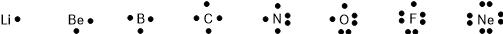
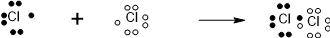
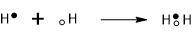
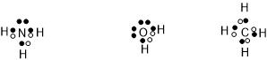
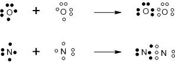
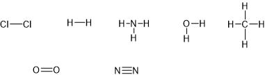

Formålet med dette kapitel er:
Lad os repetere oktetreglen: atomer tilstræber at få 8 elektroner i yderste skal. I kapitel 4 så vi hvordan dette blev opnået ved at danne ioner, hvor atomer afgiver eller optager elektroner. Der findes imidlertid en anden måde at få de ønskede 8 elektroner i yderste skal, nemlig ved en slags deling af elektroner mellem to atomer. Dette sker mellem ikkemetal og ikkemetal og den dannede forbindelse kaldes en molekylforbindelse.
For at se hvordan atomer kan deles om elektroner, indfører vi begrebet elektronprikformel. En elektronprikformel viser hvor mange elektroner et atom har i yderste skal. Man skriver atomsymbolet i midten, og udenom tegner man elektronerne i yderste skal som prikker. Da et atom højest kan have 8 elektroner i yderste skal kan der maksimalt være 8 elektroner i en elektronprikformel. I figur 5.1 kan man se elektronprikformler for det periodiske systems anden periode. (Bemærk dog at de to første atomer kun er taget med for fuldstændighedens skyld. Li og Be er nemlig metaller, og metaller indgår ikke i molekylforbindelser. Derfor tegner man normalt ikke elektronprikformler for metaller.)
Figur 5.1: Elektronprikformler for anden periode.
Bemærk hvordan elektronerne danner par (op til 4). Når vi tegner elektronerne, starter vi med at tegne en elektron i hver af de fire verdenshjørner. Derefter begynder vi at danne par. De elektroner der ikke danner par kalder vi for uparrede elektroner. De elektroner der danner et par kalder vi for ledige elektronpar (eller ikkebindende elektronpar).
Lige så mange uparrede elektroner der er i elektronprikformlen, lige så mange bindinger danner atomet til andre atomer. Dette sker ved en slags deling af elektroner mellem atomer - altsammen for at få opfyldt oktetreglen.
Chlor har 7 elektroner i yderste skal. En elektronprikformel vil derfor vise 3 ledige elektronpar og 1 uparret elektron. Chlor danner derfor én binding til et andet atom, for at få opfyldt oktetreglen. Denne binding kunne fx dannes til et andet chloratom. Ved denne binding deles de to chloratomer om de i alt to uparrede elektroner (én fra hvert atom), se figur 5.2. De to uparrede elektroner danner et nyt elektronpar der befinder sig midt mellem de to atomer. Herved får hvert atom 8 elektroner i sin yderste skal. De to chloratomer er nu bundet sammen til et molekyle. Bindingen mellem de to atomer, kaldes en elektronparbinding (eller en kovalent binding).

Figur 5.3 viser to hydrogenatomer der går sammen og danner et molekyle dihydrogen. Hydrogenatomet har kun en enkelt elektron. To hydrogenatomer deles om de to elektroner og får således en elektronparbinding. Bemærk at hydrogenatomet i et hydrogenmolekyle således ikke får 8 elektroner i yderste skal, men kun 2. Hydrogen er en undtagelse fra oktetreglen.

Figur 5.4 viser elektronprikformler for stofferne ammoniak, vand og methan.

Et oxygenatom har to uparrede elektroner og kan derfor danne to bindinger til et andet atom. Dette andet atom kunne fx være et andet oxygenatom. Der sker det, at den ene uparrede elektron fra det første oxygenatom danner par med den ene uparrede elektron fra det andet oxygenatom. På samme måde dannes der et elektronpar fra den anden uparrede elektron på de to oxygenatomer. Se figur 5.5. Da bindingen nu består af to elektronpar, kalder vi det en dobbeltbinding.
Der findes også trippelbindinger - disse består naturligvis at tre elektronpar. Bindingen mellem to nitrogenatomer i dinitrogenmolekylet, er et eksempel på en trippelbinding. Se igen figur 5.5.


Navngivning af molekylforbindelser minder en del om navngivning af ionforbindelser, men med en række vigtige forskelle. Reglerne for navngivning af molekylforbindelser, er:
1. Atomerne der indgår i molekylet, nævnes i en bestemt rækkefølge. Rækkefølgen for nogle af de mest almindelige atomer i molekylforbindelser, er:
B Si C As P N H Te Se S O At I Br Cl F.
2. Antallet af hver type atom angives ved at bruge en lille forstavelse (præfiks) foran hvert atom, jf. tabellen herunder. Dog undlades mono som regel.
| 1 | mono | 6 | hexa |
| 2 | di | 7 | hepta |
| 3 | tri | 8 | octa |
| 4 | tetra | 9 | nona |
| 5 | penta | 10 | deca |
3. Navnet ender på -id. Dette gælder dog ikke hvis stoffet kun består af én slags atomer (grundstoffer) (se de tre første eksempler nedenfor).
4. Man bruger en række sammentrækninger/undtagelser (ligesom for ionforbindelser):
| H | |
| C | |
| N | |
| O | |
| P | |
| S |
En række eksempler:
O2 dioxygen
N2 dinitrogen
P4 tetraphosphor
CO carbonmonoxid
CO2 carbondioxid
H2S dihydrogensulfid
PH3 phosphortrihydrid
N2O4 dinitrogentetraoxid
SO2 svovldioxid
SO3 svovltrioxid
B2F4 dibortetrafluorid
Den vigtigste forskel mellem navngivningen af ion- og molekylforbindelser er, at i molekylforbindelsers navne angiver man antallet at atomer med små præfikser (mono, di, tri, osv.), det gør man ikke i ionforbindelsers navne.
Der findes en række vigtige forskelle mellem ion- og molekylforbindelser. De væsentligste er: